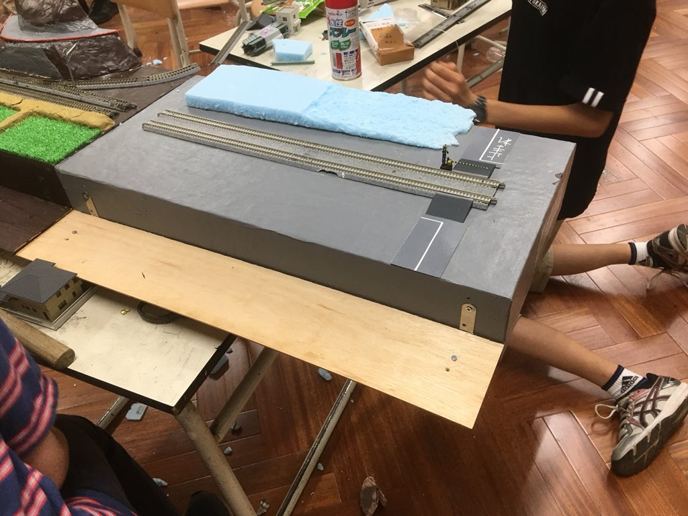
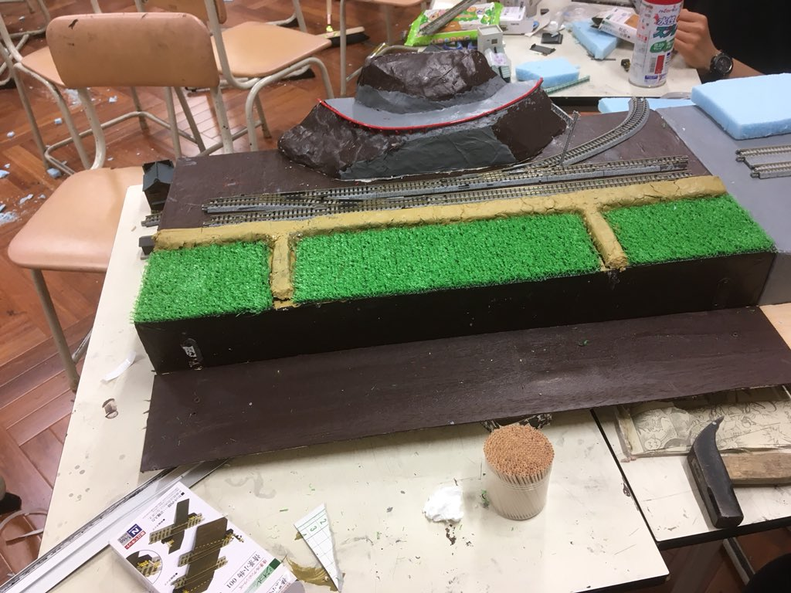
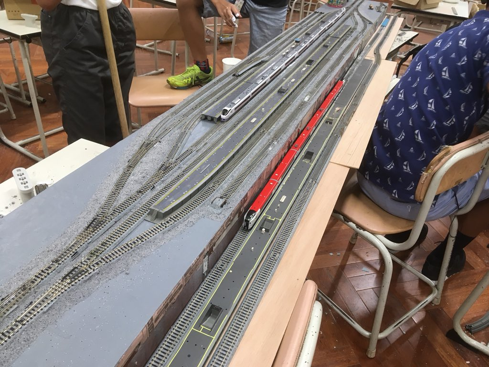
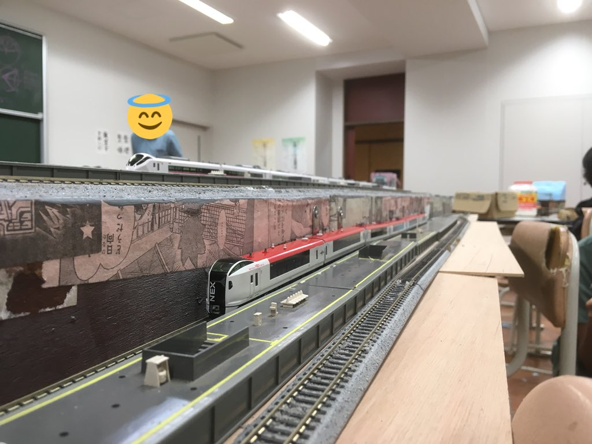
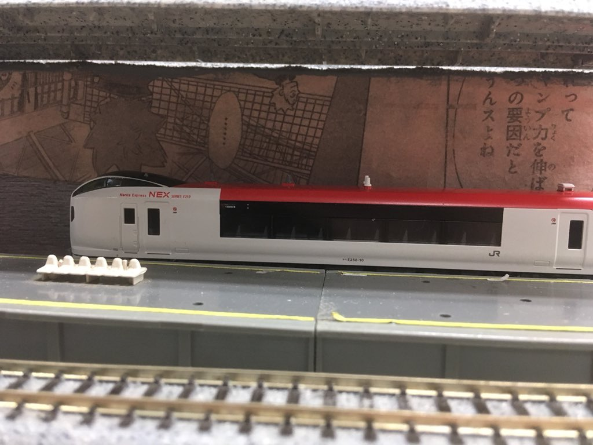

本年度モジュール主任を務めさせていただいてもらっているN.Nです。よろしくお願いします。さて、今年度のNゲージ模型は大ボードモジュール共に路線増設をやっているのですが、今回はモジュールについて。

本年度の中一モジュールです。昨年とは比べ物にならないくらい上手です。

駅モジュールです。増設路線は、地下鉄のイメージで作っているのですが4割程度作成が終わっています。

こういうの結構好きです。まだまだ作成途中ですがご期待ください。
前年度に比べて今年はモジュール製作の進行速度が速いような気がします。まだまだいろんなことを計画しているのでお楽しみください。
（気がつけば部活の記録も400回書かれているんですね。非常に感慨深いです。）
部活の記録No.401
投稿者:N.N 投稿日:2018/7/27